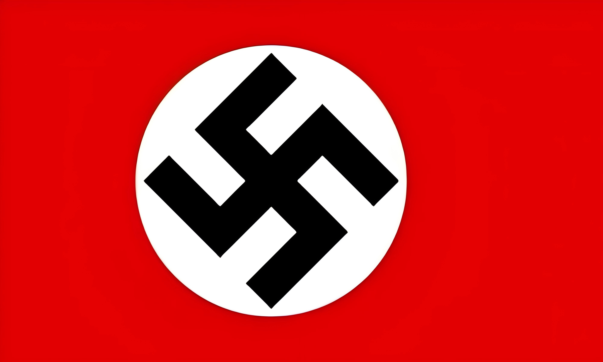
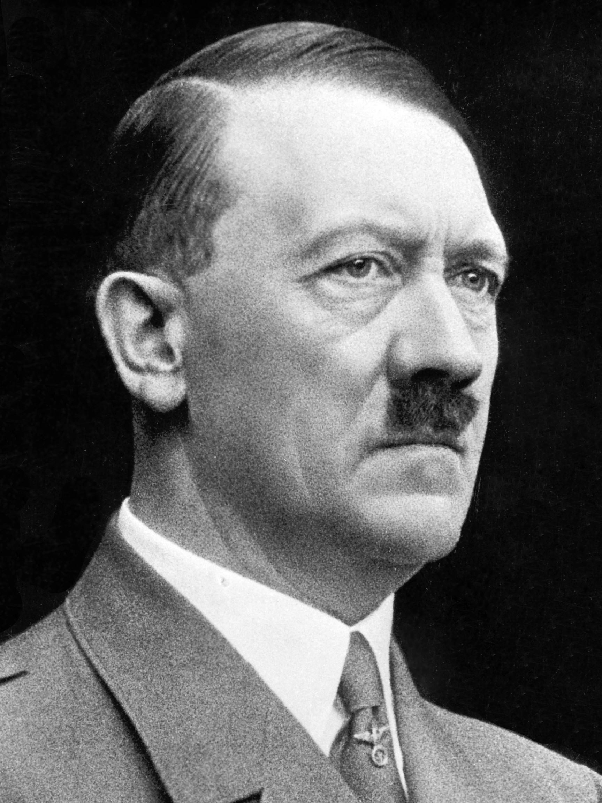
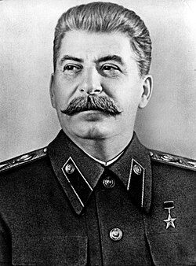

VS钢铁与雪
苏德战争全景推演 (1941 - 1945)
【背景概述】：1941年6月22日，纳粹德国撕毁《苏德互不侵犯条约》，集结超300万兵力发动“巴巴罗萨行动”。这是人类历史上规模最大、伤亡最惨重、战况最惨烈的现代化战争。
【历史定论】：作为第二次世界大战欧洲战场的决定性部分，这场战争彻底粉碎了法西斯德国不可战胜的神话，并最终将其摧毁。数千万军民在这片东欧冻土上长眠。

VS苏德战争全景推演 (1941 - 1945)
【背景概述】：1941年6月22日，纳粹德国撕毁《苏德互不侵犯条约》，集结超300万兵力发动“巴巴罗萨行动”。这是人类历史上规模最大、伤亡最惨重、战况最惨烈的现代化战争。
【历史定论】：作为第二次世界大战欧洲战场的决定性部分，这场战争彻底粉碎了法西斯德国不可战胜的神话，并最终将其摧毁。数千万军民在这片东欧冻土上长眠。

希特勒 (轴心国)
斯大林 (同盟国)轴心国统帅部：除希特勒外，曼施坦因、古德里安、保卢斯、莫德尔等将领在东线执行了闪电战与残酷的焦土政策。
苏联最高统帅部：在斯大林的领导下，朱可夫、罗科索夫斯基、科涅夫、华西列夫斯基等名将逐渐成熟，指挥了震撼世界的大纵深反攻。
苏德战争构成了人类史上最庞大的陆军对决。纳粹德国及其盟国累计投入了逾千万兵力；而苏联为了挽救国家危亡，在四年间史无前例地动员了超过3400万军民奔赴前线。
二战欧洲战场80%以上的战斗发生于此，堪称巨大的绞肉机。苏军付出近870万将士阵亡的代价，平民遇难超1700万；轴心国在东线的阵亡与失踪人数亦突破500万。这片冻土吞噬了无数生命。
红旗插上帝国大厦：苏联以难以想象的惨痛代价，几乎凭借一己之力摧毁了纳粹德国绝大部分的军事机器。东线的胜利不仅捍卫了民族生存，更是粉碎全球法西斯图谋、奠定反法西斯战争最终胜利的最关键基石。

图：红旗插上柏林国会大厦，宣告纳粹德国覆灭。
1941年6月22日至1945年5月9日，这场历时近四年的卫国战争，构成了第二次世界大战中规模最庞大、战况最激烈的核心战场。从巴巴罗萨计划那场突如其来的闪击狂潮，到莫斯科城下粉碎神话的严寒阻击；从斯大林格勒那座令人窒息的血肉磨坊，到库尔斯克平原上的钢铁对决，最终苏联红军势如破竹般跨过奥德河，将胜利的红旗牢牢插上了柏林国会大厦。纳粹德国的野心被彻底埋葬于此。
作为世界反法西斯战争的决定性主战场，东方战线彻底埋葬了第三帝国的图谋。据史料统计，二战中德国武装力量近80%的损失均发生在这片广袤的东欧大地上。苏联军民以极其悲壮的牺牲精神，不仅挽救了国家危亡，更斩断了法西斯奴役欧洲的锁链，为拯救世界和平作出了不可磨灭的卓越贡献。战后的政治版图与国际新秩序，亦在这片焦土的废墟之上深深扎根。
战争的暴行给人类文明留下了永不愈合的伤疤。无数城市与村庄化为灰烬，数以千万计的无辜平民死于屠杀、饥饿与极端严寒。这场由极端种族主义和军国主义挑起的浩劫，用鲜血凝结成了沉重的历史教训。它永远警示着后人：必须时刻警惕极端霸权思想的死灰复燃。和平犹如脆弱的琉璃，唯有铭记这段钢铁与血火的历史，捍卫人类的共同底线，方能避免浩劫重演。